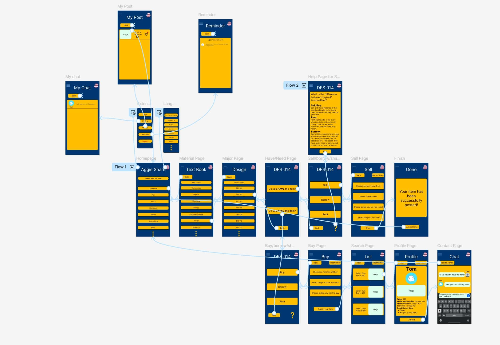

The Impact of UI/UX Design in Website Development
Date: March 3, 2025

Introduction
Have you ever been irritated by an obstructed navigation system or interface while on a website? This is where UI (User Interface) and UX (User Experience) design takes center stage. Recently, in the course of my research on web designing, I stumbled upon an article that caught my attention. The article was titled “The Role of UI/UX Design in Website Development,” authored by ZillionDesigns. The aim of this piece is to help underpin the place of UI/UX design in the course of website design for users, and the course of using the internet at large. In this blog, I will discuss what I think are the major points in the post, and justify how it correlates with the knowledge I have acquired in this course.
Key Takeaways from the Article
- UI vs. UX: Understanding the Difference
- UI (User Interface): Focuses on visual elements like buttons, typography, colors, and layouts.
- UX (User Experience): Focuses on how users interact with the website and ensures smooth navigation.
- Why UI/UX Design Matters in Web Development
- A well-designed UI makes a website visually appealing, while a strong UX ensures easy navigation and usability.
- Good UI/UX design helps reduce bounce rates, keeping users engaged.
- It contributes to higher conversion rates by making the website easy to use and navigate.
- Best Practices for UI/UX Design
- Prioritizing mobile responsiveness for seamless viewing on all devices.
- Using clear and intuitive navigation so users can find information easily.
- Implementing fast load times to prevent user frustration.
- Focusing on accessibility to make the website inclusive for all users.
Connecting to Course Learnings
With every effort put forth in the classes, the user initiates the maintenance and the development of his capabilities. Acquisition of practical skills in web programming is certainly one of these self-developing activities. For example, Web Design and User Interface Design are some of the interesting areas which I have improved on while in this course. This paper specifically emphasized several aspects that reinforced the lessons I have learnt:
- CSS’s Role in UI/UX: The video "Why CSS is So Weird" explained how CSS impacts design structure, and I now better understand how layout techniques like Flexbox and Grid improve usability.
- Navigation and Usability: One of the biggest takeaways from the course and the article is how well-structured navigation improves user experience. Implementing proper menu designs and responsive elements ensures seamless browsing.
- Visual Hierarchy in UI Design: The importance of using contrast, spacing, and typography to guide users' attention aligns with my coursework.
Final Thoughts
I have to say that this article has only reinforced my love for UI/UX design for web development. It’s not just simple creation of an attractive design; it’s about how easily users control their experience of the website. I am really encouraged by this writing and I am going to work on it, making websites that are both beautiful and operational. Check out the full article here: Read More